Ground robots often carry payloads, implements, or other attachments that turn their effective footprint into complex, non-convex shapes. Navigating safely through clutter then requires reasoning about this true geometry, yet most local planners simplify it with convex or inflated proxies and rasterize sensor data into occupancy grids or distance fields. Both choices eliminate feasible motions when clearance is comparable to the footprint geometry. We present EXACT-MPPI, a training-free local navigation framework that maps local point-cloud observations and sparse guidance directly to motion commands, without any intermediate map representation. The framework embeds an analytic, exact signed-distance evaluator into a Model Predictive Path Integral (MPPI) controller. The footprint is represented as a simple polygon for general convex or concave planar shapes, with a rectangle-cover specialization for faster evaluation of rectilinear footprints, enabling footprint-aware collision costs without convex decomposition, inflation, or learned encoders. During each MPPI rollout, observed obstacle points are transformed into the predicted body frame and evaluated against the footprint. All operations are batched in JAX, leveraging GPU parallelism for real-time receding-horizon control. Experiments show that EXACT-MPPI accelerates batched distance evaluation over a learned point-to-robot baseline, preserves feasible motion where convex-footprint planners fail, and remains robust under dense static and moving obstacles. The same framework deploys on differential-drive, Ackermann, omnidirectional, and hybrid-mode platforms by changing only the footprint description and motion model without per-platform training. Pairing exact footprint geometry with sampling-based predictive control thus offers a practical, training-free path to footprint-aware local navigation across diverse robots.
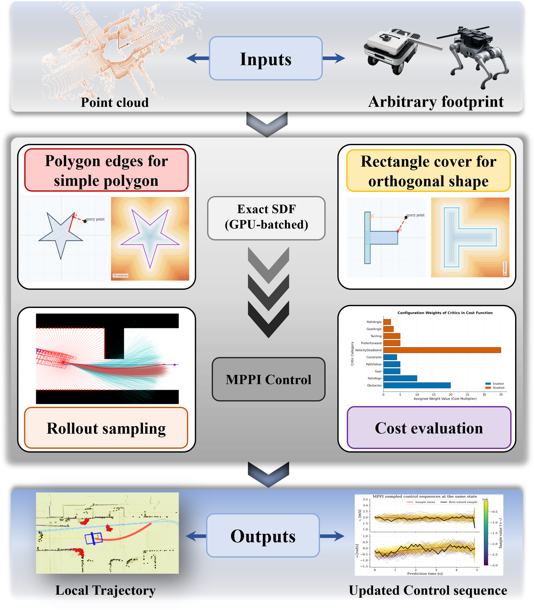
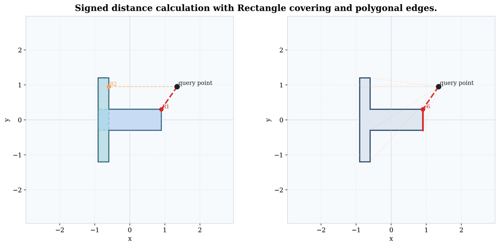
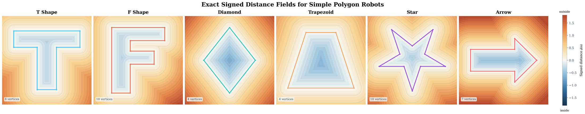
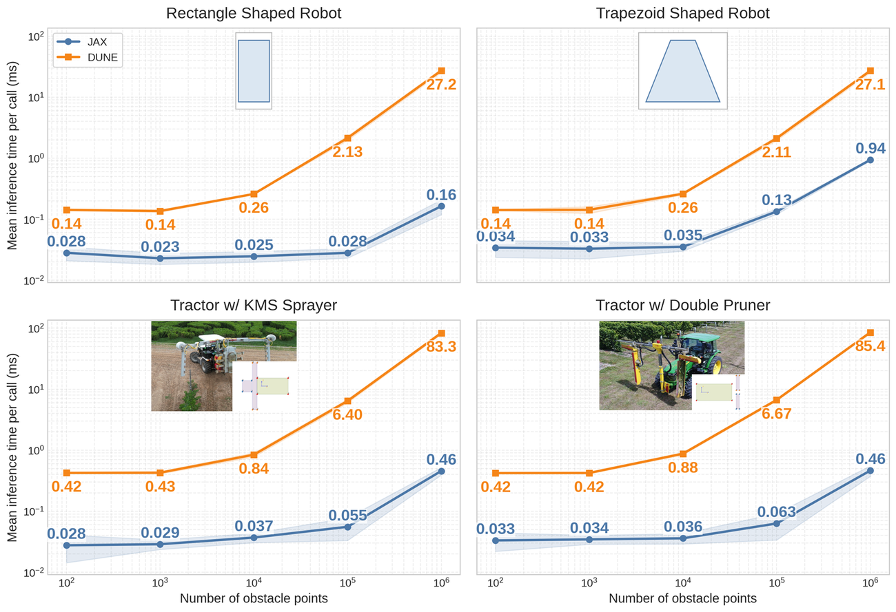
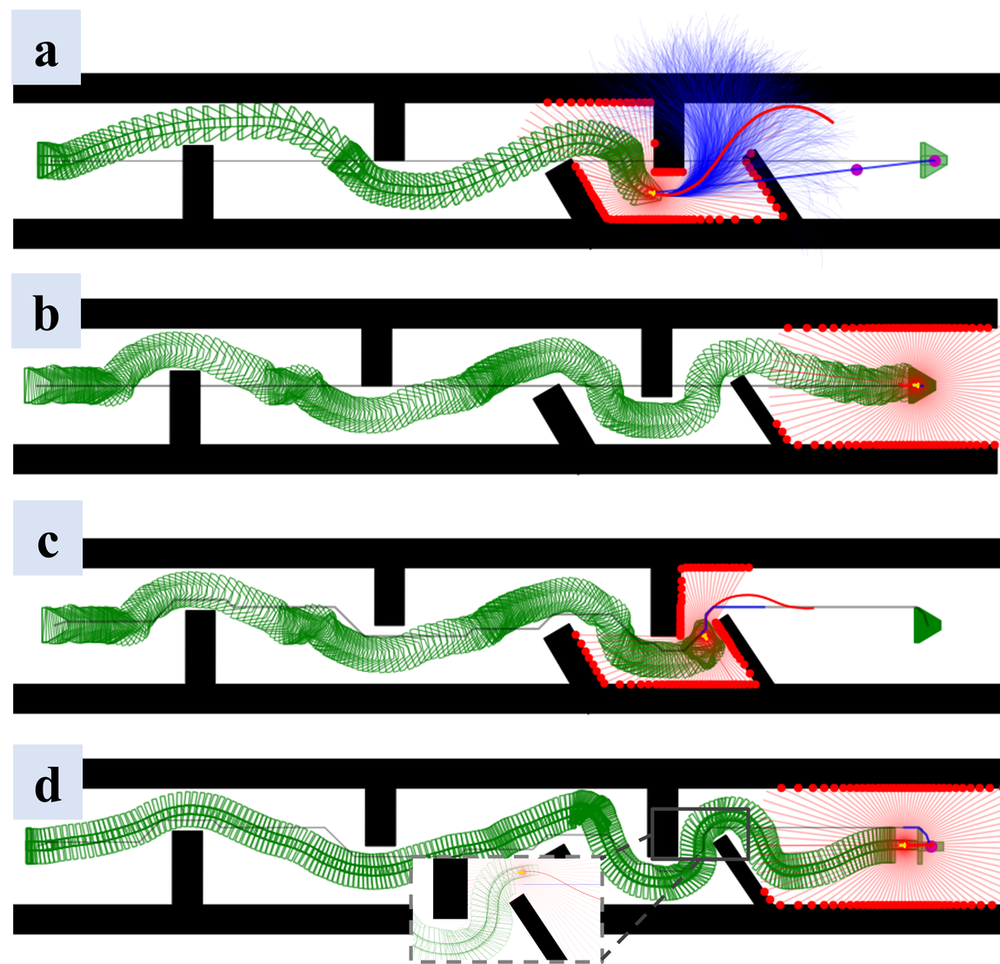
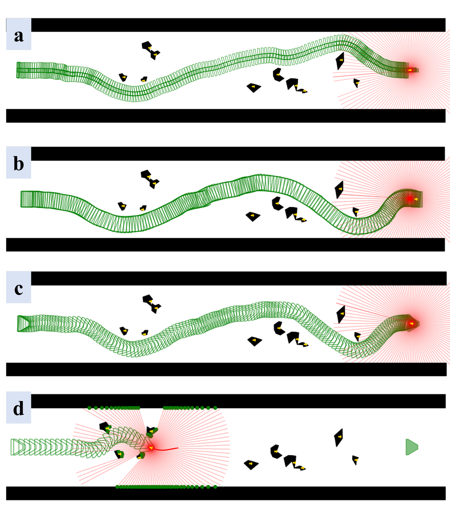
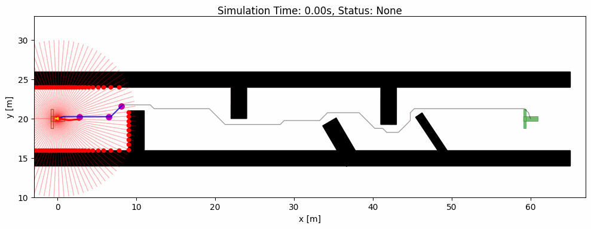
Cluttered corridor with a T-shaped footprint.
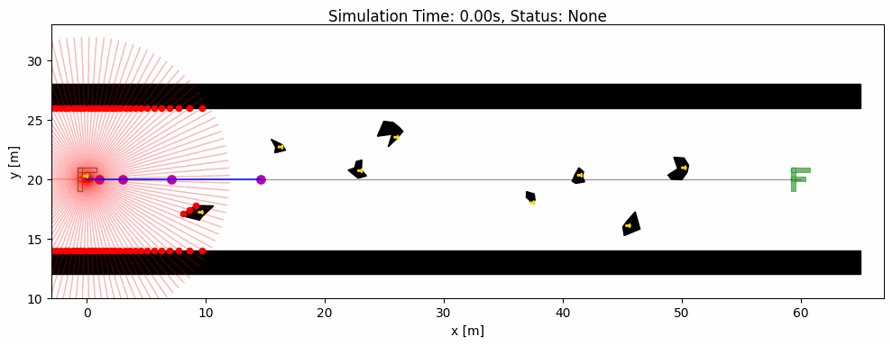
F-shaped footprint with moving obstacles.
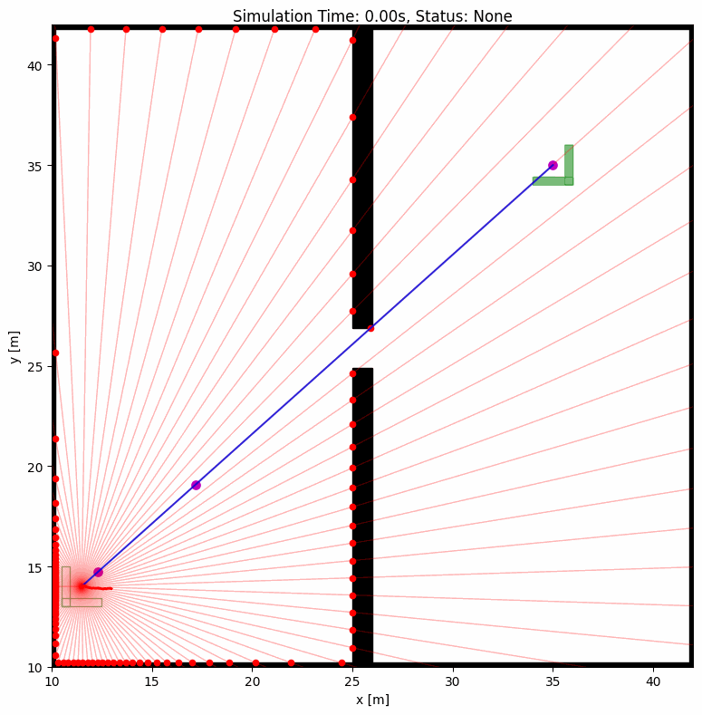
Narrow-gap navigation near clearance limits.
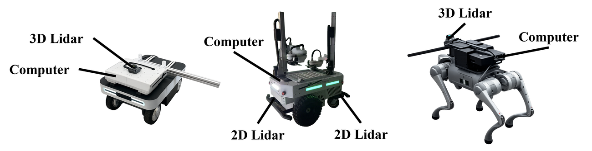
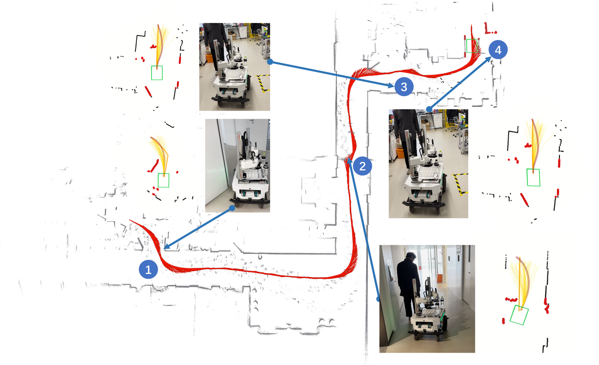
Differential-drive transportation in indoor narrow spaces.
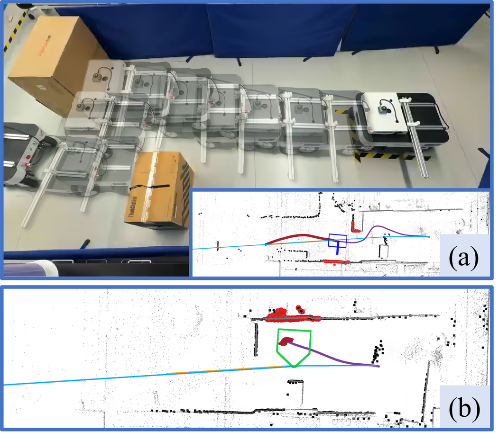
Ranger mini trap scenario under parallel motion.
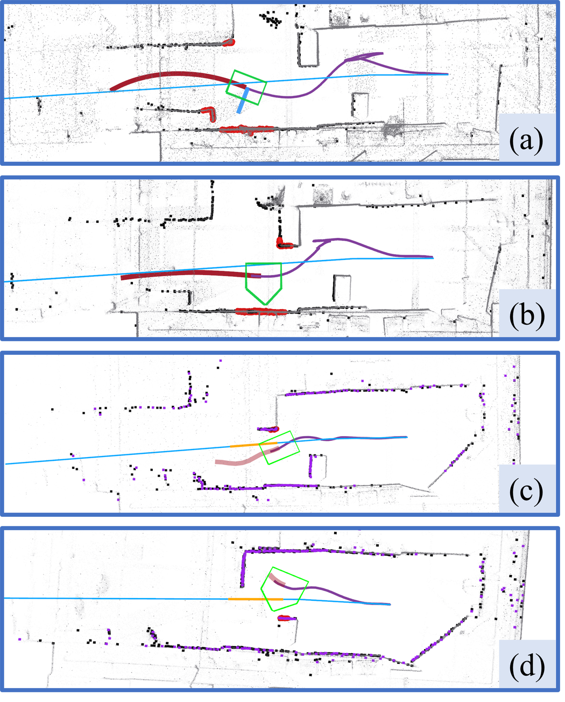
Ranger mini trap scenario under dual-Ackermann steering.
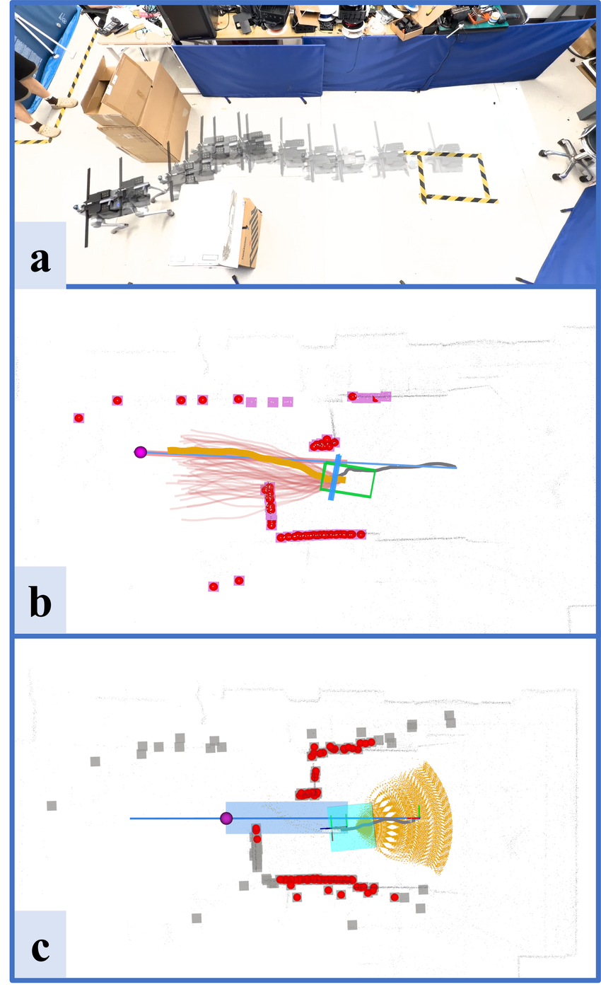
Unitree Go2 narrow-passage comparison with a carried bar.
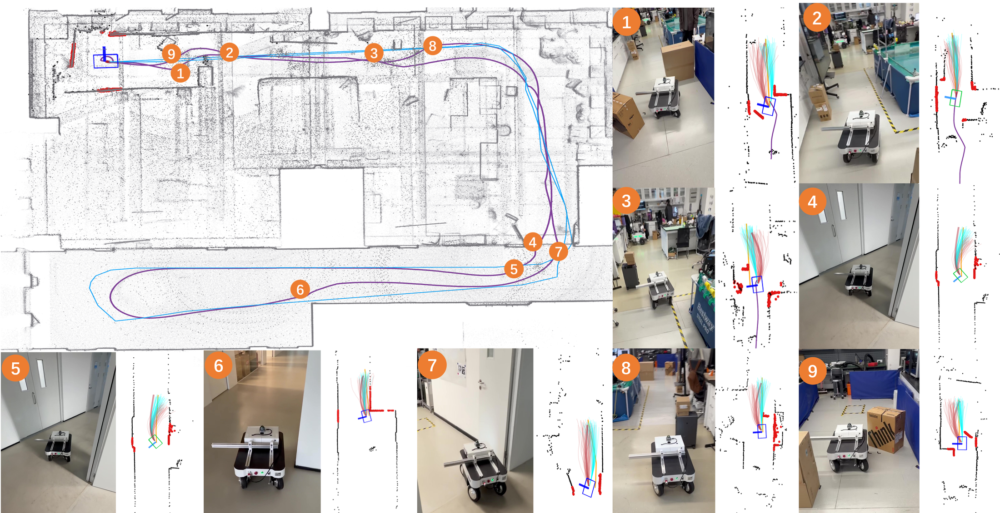
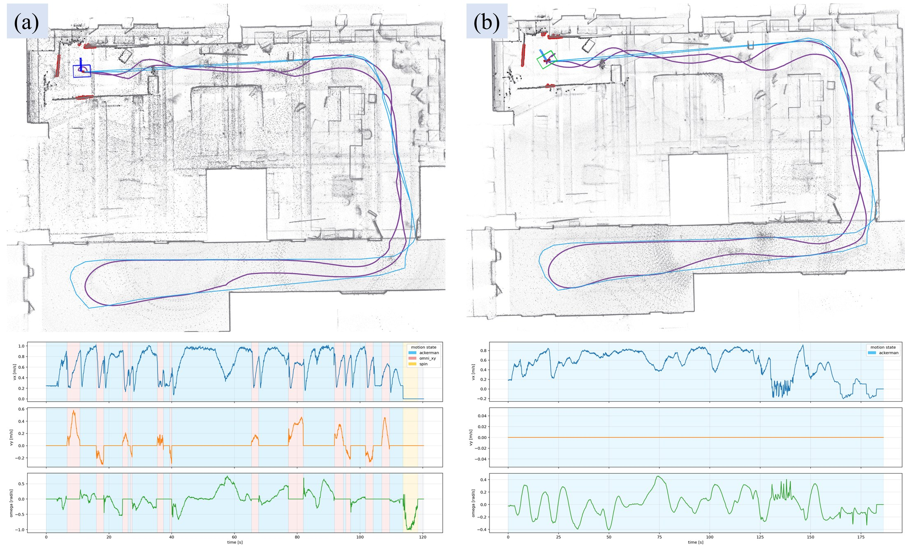
Deployment on a differential-drive robot.
Deployment on a swerve-control robot.
Deployment on a quadrupedal robot.
@misc{exact_mppi_under_review,
title = {EXACT-MPPI: Exact Signed-Distance Navigation for Arbitrary-Footprint Robots from Point Clouds via Path Integral Control},
author = {Peng, Chen and Ge, Zhikang and Lu, Wenwu and Gao, Haiming and Vougioukas, Stavros and Wei, Peng},
year = {TODO},
note = {Manuscript under review. Project page: https://agroboticsresearch.github.io/exact-mppi/}
}